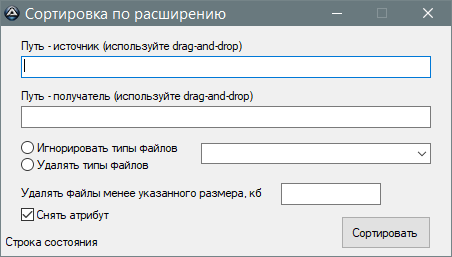

Sort
Назначение
Сортирует файлы по расширениям. Например загрузки.

Полученный результат не возможно откатить назад, поэтому если в папках были дистрибутивы программ, то лучше обработать папку, в которой нет вложенных папок, а если есть то переложить их во внешний каталог.